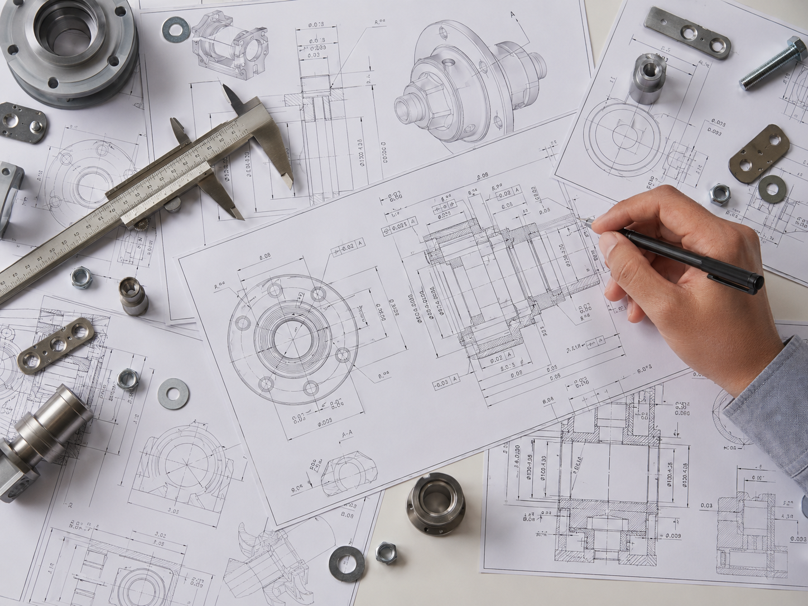

CAD / Mühendislik14.04.2026
Tasarım programları hakkında notlarım
SolidWorks, CATIA ve AutoCAD ile ilgili kısa notlarım.
Yazıyı OkuTeknik Blog
Araştırdığım konuları ve uygulamalarda öğrendiklerimi buraya yazıyorum.

SolidWorks, CATIA ve AutoCAD ile ilgili kısa notlarım.
Yazıyı OkuAğa bağlı bir cihaz yanlış veri veya komut alırsa ne olur?
Yazıyı OkuMakinelerden alınan veriler ve bu konuda öğrenmek istediklerim.
Yazıyı OkuArduino Uno ile LED bağlantısı ve örnek kod.
Yazıyı OkuHangi iş için hangi kartı seçerdim?
Yazıyı Oku